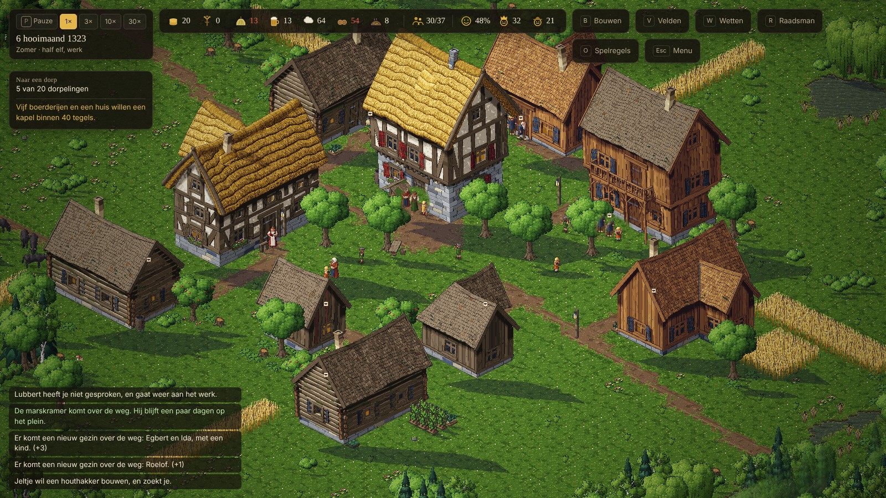
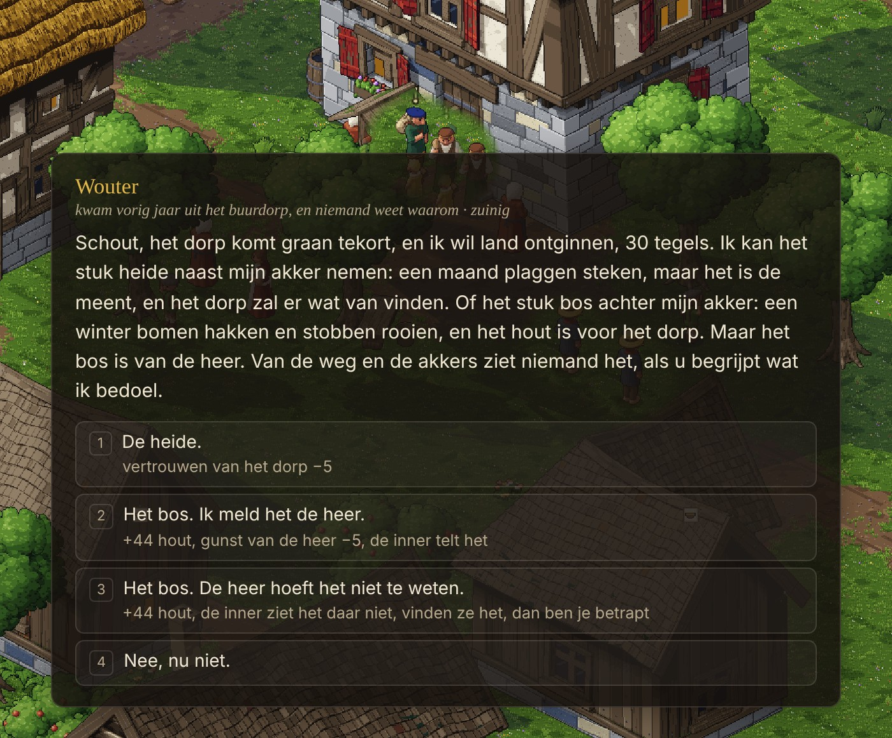
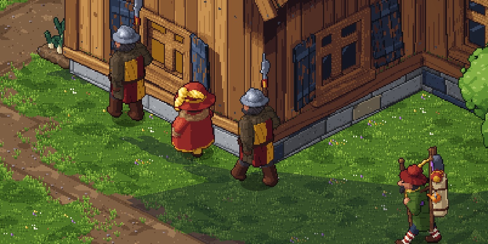
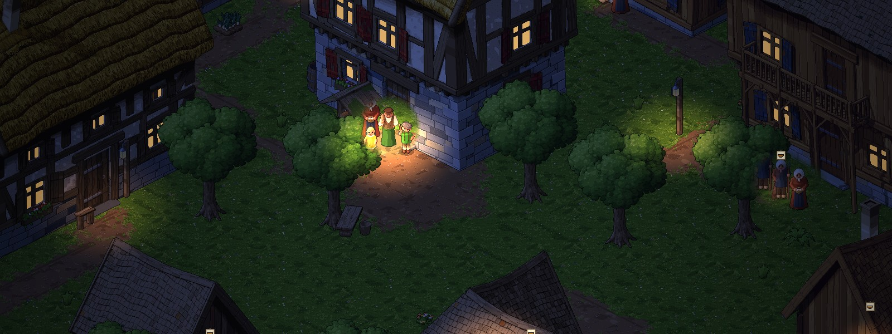

De heer wil goud. Het dorp wil leven. Dien hem, verraad hem, of verjaag hem.
Een bouw- en bestuurspel in isometrische pixel art. Je bent geen god boven het dorp, maar de schout erin.

Het gehucht op een zomerochtend. Bovenin de voorraad, de bevolking, de tevredenheid en de twee bazen; linksboven het doel (een dorp worden) en de raad: wat er nu tussen jou en dat doel staat. Linksonder wat er in het dorp gebeurt.
Soort spel
Een dorp besturen van binnenuit, met politiek en avontuur
Je speelt
Eén mens: de schout, een poppetje in het dorp
Beeld
Isometrisch, HD-pixel art, dag en nacht
Vechten
In beurten, op dezelfde tegels als het rondlopen
Verwant aan
Anno 1602, Yes, Your Grace, Kingdom Two Crowns, Democracy 3, Lords of the Realm 2, RimWorld, Jagged Alliance 2
Voor
De pc, via Steam
Het idee
Je bent de schout van een gehucht. Boven je staat een heer die verward is en alleen geld ziet. Om je heen wonen de mensen die het dorp maken, en die willen leven. Jij staat ertussen. Je laat het gehucht groeien tot een dorp en een stad, je bestuurt het met wetten, en aan het eind ben je van de heer af.
Je hangt niet als hand boven het dorp: je loopt erin rond. Wat in andere bouwspellen één klik is, gaat hier via een persoon, een plek, een papier of een handeling. Een inwoner komt je iets vragen, je raadsman brengt ’s ochtends zijn rapport aan je deur, en de heer stuurt een brief. Wie wil weten hoe het ervoor staat, gaat zelf kijken: wat je weet, is wat je zag of hoorde.
Twee bazen
De heer en het dorp kunnen je allebei wegsturen. In de balk staan twee meters van 0 tot 100: de gunst van de heer (de kroon) en het vertrouwen van het dorp (de hoed). Zakt er een onder de 20, dan krijg je een waarschuwing. Op 0 ben je je ambt kwijt, of jaagt het dorp je weg. En het dorp is geen blok: elke groep vertrouwt je op zijn eigen manier, en de boeren kunnen voor je zijn terwijl de ambachtslieden tegen je zijn.
Bijna elke keuze kost aan de ene kant wat ze aan de andere wint. Een voorbeeld, rechts: het graan komt tekort, en een boer wil land ontginnen. De heide is de meent van het dorp, dus dat kost vertrouwen. Het bos is van de heer: melden kost zijn gunst, en stiekem kost niets, tot zijn inner of zijn soldaten het vinden.
Elk antwoord zegt vooraf wat het kost. Wie je niet op tijd spreekt, gaat weer weg, en ben je op reis, dan beslist je raadsman, naar zijn eigen karakter.

Wat je weet
In het dorp is er altijd wat er echt gebeurde, wat er gezegd wordt, en wat jij weet. Niemand vertelt je alles, en een gerucht is geen feit. Je weet iets omdat je erbij was, omdat iemand het je vertelde of je het in de herberg hoorde, omdat je je raadsman of een wachter liet kijken, omdat je de boeken nalas of iemand volgde, of omdat twee verhalen niet kloppen. Ook de balk toont wat er het laatst geteld werd, niet wat er nu ligt.
De zitting. ’s Middags spreek je recht, met een aanklager, een verdachte, getuigen, bewijs, geruchten en wat jij zelf weet, onder de ogen van het dorp. Soms weet je dat iemand schuldig is, maar kun je het niet bewijzen. Soms heb je bewijs dat de heer liever niet ziet.
Een voorbeeld: de verdwenen graanzak
Er ontbreekt graan in de schuur, en een buurman wijst de molenaar aan, die het ontkent. Je gaat kijken, en in de herberg hoor je wie er ’s nachts liep. Het graan blijkt naar een zieke familie te zijn gegaan. In de zitting kies je: straffen, vrijspreken, of de diefstal verbergen. Het dorp onthoudt wat je deed, en op Sint-Maarten merkt de heer het tekort.
De dag en het jaar
Een dag duurt vijf minuten, en sneller kan. Hij heeft vaste momenten:
’s Ochtends
staat je raadsman aan je deur met zijn rapport: wat er gebeurde, hoe het graan en het hout gaan, of het dorp de winter haalt, en wat er komt.
Overdag
komen inwoners je zoeken, met een vraag, een ruzie, een ramp of een plan om te bouwen. ’s Middags houd je zitting als er rechtszaken zijn.
’s Avonds
zit het dorp in de herberg. Daar hoor je wat er speelt, en daar vertellen getuigen wat ze zagen.
’s Nachts
slaap je, net als het dorp, tot de ochtend.
Het jaar geeft het spel zijn ritme. De boeren doen het werk van het seizoen zelf, en de heer komt op vaste tijden.
Lente
lentemaandde boeren zaaien; het jaarverslag
grasmaandde marskramer; de meiboom
bloeimaandhet graan staat groen
Zomer
zomermaandde schapen worden geschoren
hooimaandhet graan is rijp; hooien; de heer vraagt mannen voor zijn oorlog
oogstmaandde oogst; de inner komt tellen
Herfst
herfstmaandde boeren kiezen hun velden; het oogstfeest
wijnmaandde brief met de schatting
slachtmaandslachten; op Sint-Maarten komt de heer innen, en zoeken zijn soldaten
Winter
wintermaand tot sprokkelmaandhaalt het hout en het eten de winter? Het vee eet hooi.
Bijna elke maand een gril van de heer in een brief. En altijd: inwoners met een vraag, nieuwe gezinnen, en soms rovers.
Het dorp groeit door zijn mensen
Je bouwt het dorp niet, je bestuurt het. Wat het dorp mist, komt een inwoner je vragen. De plek ligt in goud op de grond, met wat het kost, en jij zegt ja of nee. Jij wijst erven aan voor nieuwe gezinnen, en hangt oproepen op het plein (“Het dorp zoekt een steengroeve”, met een premie). Een ondernemer wil soms iets wat niemand mist: wapens smeden voor als de rovers terugkomen, of een tweede herberg, tot woede van de herbergierster.
Mensen die onthouden. Elke inwoner heeft familie, vrienden, rivalen en schulden, eigen belangen en soms een geheim, en onthoudt wat je deed: wie je hielp, wie je strafte, wie land kreeg. Zo komt een grote keuze maanden later terug.
Elk huis heeft een stand, met wensen, zoals in Anno 1602: keuters in hutten, dorpelingen in huizen, ambachtslieden in stenen huizen, en de boeren op hun boerderij. Wie hoger staat, wil wat de stand eronder wil, en meer: bier, vlees of vis, brood, laken, een put en een kapel in de buurt, de herberg en de markt. Heeft een huis een maand lang alles, dan groeit het door naar de volgende stand.
Treden. Bij 20 dorpelingen wordt het gehucht een dorp, bij 20 ambachtslieden krijgt het marktrecht, en zo groeit het naar een stad.
Wetten kies je in een menu zoals in Democracy 3: het rantsoen, vreemden welkom, houtkap in het bos van de heer, de belasting. Elke wet weegt per stand anders.
De boeren doen het werk zelf: zaaien, wieden, mest uitrijden, maaien, slachten, hout sprokkelen. Jij houdt een oogje in het zeil. Een probleem heeft altijd een oorzaak die je had kunnen zien: honger, kou, een vol dorp, onvrede.
De heer
Telkens wil hij in een brief iets geks: een standbeeld, een vet varken, de bruiloft van zijn neef. Wat je antwoordt, kost de een of de ander iets.
In oogstmaand komt zijn inner tellen wat hij ziet, en op Sint-Maarten komt de heer zelf innen, naar wat het dorp lijkt te hebben. Zo word je rijk en lijk je arm: wat je opzij zet, verstop je in een kelder of in de kapel. Maar wie het zag, kan het in de herberg vertellen, en zijn soldaten doorzoeken het dorp.
Hij leert van je. Lieg je vaak, dan laat hij controleren; betaal je veel, dan vraagt hij meer; bescherm je steeds het dorp, dan test hij je trouw.
Voert hij oorlog, dan vraagt hij mannen voor zijn heervaart, of goud.

De heer komt het dorp in, met zijn twee soldaten. Hij is lachwekkend, zijn straffen niet: zwarte satire.
Hij woont in een kasteel op de kaart, heeft elk spel een ander karakter, en sluit bonden met de andere dorpen.
Het doel: de heer verstoten en verslaan
Er zijn drie wegen, die je onderweg voorbereidt en kunt wisselen:
De opstand
Je verdedigt je eigen dorp, en bestormt dan zijn kasteel.
De koning
Achter zijn rug om, met bewijs en een bode. De koning zet hem af en geeft jou stadsrechten.
Trouw
Je onderwerpt de rest van het land voor hem, en wordt zijn erfgenaam: de nieuwe heer.
Sterk word je door te veroveren en bevriend te raken, zoals in Civilization, en door je mensen gelukkig te maken: een dorp waar iedereen een jaar lang in al zijn wensen voorzien is, volgt je in de opstand, en een bloeiend dorp krijgt het oor van de koning. Aan het eind zie je de geschiedenis van jouw schout: de grote keuzes, wie er stierf, wie jouw kant koos, en wat voor schout je werd: rechtvaardig, corrupt, volks of trouw.
Je kunt ook verliezen: de heer ontslaat je, het dorp jaagt je weg, het dorp loopt leeg, of de schout sneuvelt. En omdat de heer kiest uit dezelfde handelingen als een mens in zijn plaats, kan na de release ook een vriend de heer spelen.
De wereld
Elk spel een ander land. Je gehucht ligt op een kaart van 100 bij 100 tegels, met bossen, vijvers en rotsen, en een eigen bouwstijl. Wat er ligt, doet ertoe: een houthakker hoort bij het bos, een steengroeve bij de rotsen, een visser aan het water.
Het wild. In de bossen leven wolven en herten. In de schemering grazen de herten aan de rand, en ’s nachts lichten in het donker de ogen van de wolven op. In de winter hebben de wolven honger: ze halen een schaap, en wie alleen aan de bosrand werkt, loopt gevaar. Een jager houdt ze klein, en wie het bos kapt, drijft ze dieper het bos in.
Een land in dagen. Over de weg kom je op een kaart met provincies, waar je dagen reist, zoals in Lords of the Realm 2. Daar liggen andere dorpen, elk met een eigen karakter, die net als jij de grootste willen worden; hoeveel, kies je aan het begin. Een bond sluit je te voet: je reist er zelf heen. Een veroverd dorp blijft bestaan, en je bestuurt het erbij.
Vechten. Wie het dorp verlaat, kan als rover terugkomen. Rovers vallen tegen de avond een akker aan, en de wachters lopen met je mee. Rondlopen gaat dan naadloos over in een gevecht in beurten, op dezelfde tegels, zoals in Fallout en Jagged Alliance 2. Wie valt, is dood; valt de schout, dan is het spel uit.
Hoe het eruitziet
Isometrisch, met Mystic Towers als voorbeeld, in HD-pixel art die uit code komt: kleine 3D-modellen, uit acht richtingen getekend. Het licht volgt het uur, ’s avonds branden de lantaarns en de ramen van wie thuis is, en alles wat staat, werpt een schaduw die met de zon meedraait.
Elke inwoner heeft een naam, een leeftijd, een huis, een gezin en werk, en loopt zijn dag. Wie een buur tegenkomt, blijft soms staan voor een praatje, waar veel gelopen wordt, slijt een paadje in het gras, en het dorp viert feesten, zoals de meiboom en het oogstfeest.

Een zomeravond op het plein: de lantaarns branden, en wie nog buiten is, staat in het licht.
Ontwerpregels
Wat elders één klik is, gaat hier via een persoon, een plek, een papier of een handeling.
Wat je weet, komt ergens vandaan, en een gerucht is geen feit.
Je bouwt het dorp niet, je bestuurt het.
Een inwoner is geen getal, maar een mens met belangen, die onthoudt wat je deed.
Elke keuze zegt vooraf wat ze kost, bijna elke keuze kost de ene baas wat de andere wint, en een grote keuze komt later terug.
Een probleem heeft een oorzaak die je had kunnen zien, en een toestand (honger, droogte) heeft een begin en een eind.
Een keuze die op je wacht, heeft een termijn: wie je niet spreekt, gaat weer weg, en ben je weg, dan beslist je raadsman.
Een eenvoudige regel gaat voor een regel die klopt met vroeger.
Heeft een ontwerpvraag meer dan één goed antwoord, dan kies je het zelf, in de spelregels.